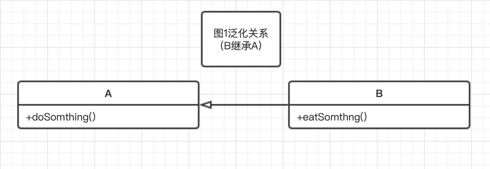
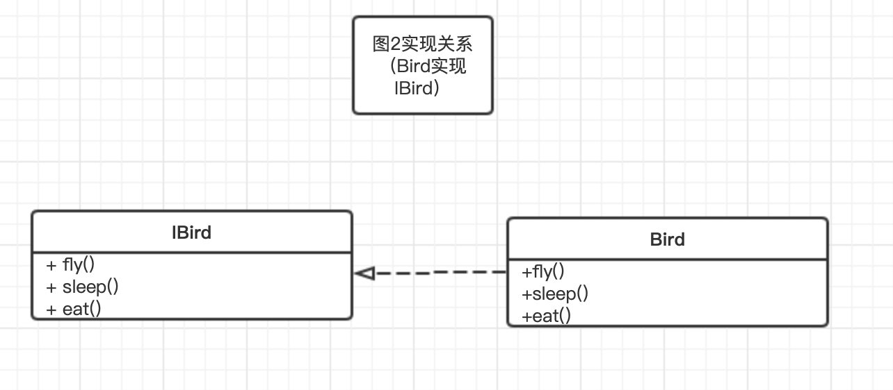
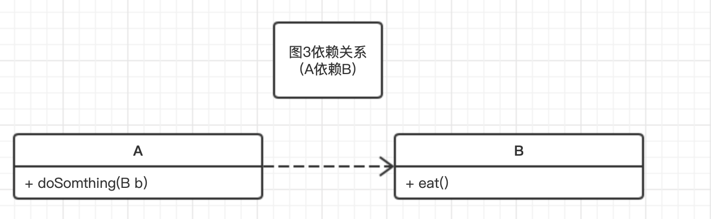
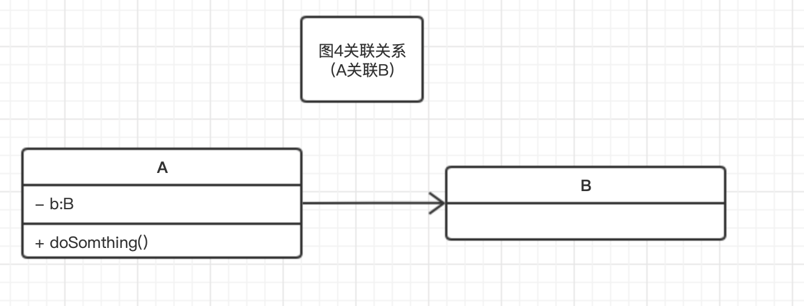
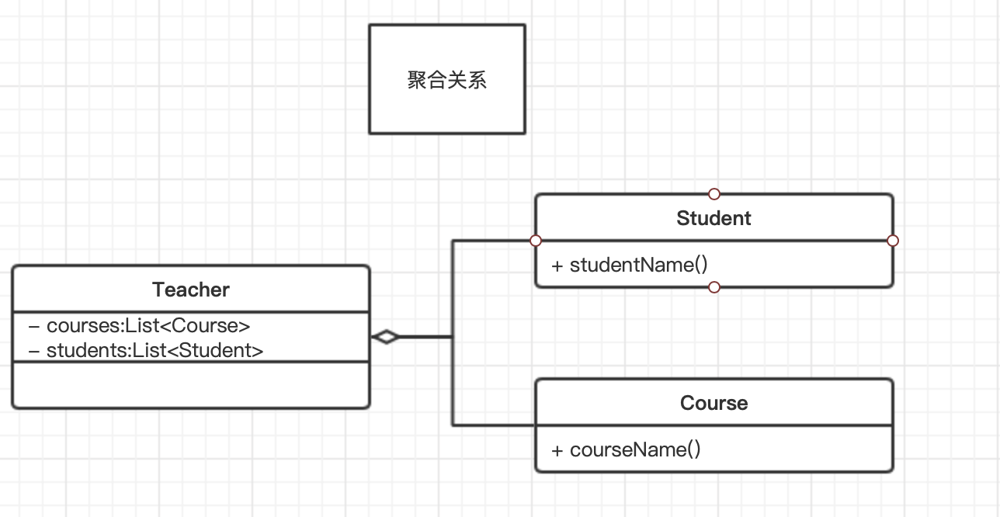
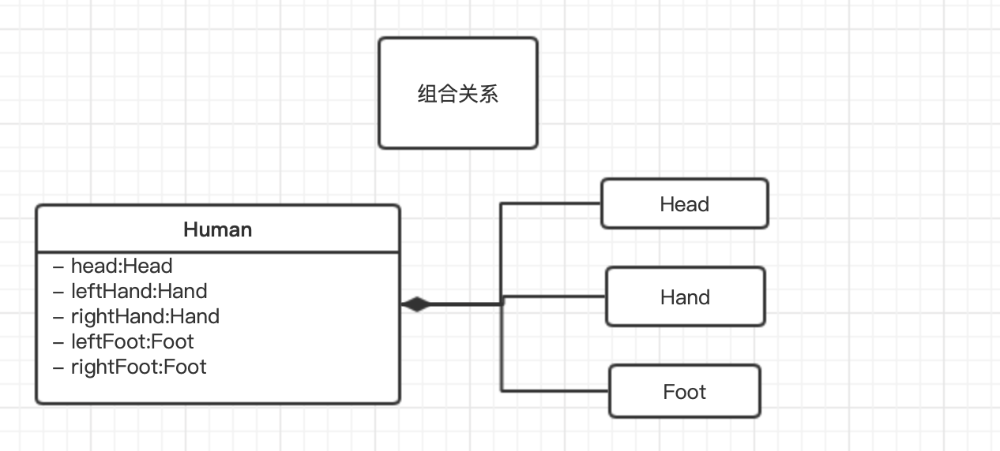

前言
UML，Unified Modeing Language，统一建模语言，是个很庞大的概念，本篇想要讲的是UML中比较普遍的箭头即线条代表的具体含义，以便日后遇到UML图能了解不同类及对象之间的关系。
UML中的六种关系
泛化
概念：泛化描述的是一般与特殊、一般与具体，具体描叙建立在一般描述基础之上，并对其进行了扩展。在Java中用来表示继承关系。
表示：实线空心三角箭头表示，箭头由子类指向父类。
示例代码及图形
1 | class A { |
类图

实现
概念：实现描述的是一种类与接口的关系，表示类是接口所有特征和行为的实现，在程序中一般通过类实现接口来描述。
表示：虚线空心三角箭头表示，箭头由接口实现类指向接口。
示例代码及图形
1 | interface IBird { |
类图
依赖
概念：依赖描述的是一种使用的关系，即一个类的实现需要另一个类的协助。如类A的某个方法中的参数类型为类B，则类A依赖于类B。
表示：虚线箭头，由依赖方（类A）指向被依赖方（类B）。
示例代码及图形
1 | class B { |
类图

关联
概念：关联描述的是类与类之间的联接,它使一个类知道另一个类的属性和方法，这种关系比依赖更强、不存在依赖关系的偶然性、关系也不是临时性的，一般是长期性的。如类A有一个成员变量的类型为类B，则类A就可以访问类B的所有非私有方法，这样我们就说类A关联于类B。
表示：实现箭头，由关联（类A）方指向被关联方（类B）。
示例代码及图形
1 | public class B { |
类图

上面表示的时单向关联，A即关联B，如果类B改为如下形式，则A和B就是双向关联，双向关联用不带箭头的实线表示
1 | public class B { |
聚合
概念：聚合关联关系的一种特例，是强的关联关系。聚合是整体和个体之间的关系，即has-a的关系，整体与个体可以具有各自的生命周期，部分可以属于多个整体对象，也可以为多个整体对象共享。程序中聚合和关联关系是一致的，只能从语义级别来区分；
表示：整体类端为空心菱形的实线。（关联关系不强，所以是空心的菱形）
示例代码及图形
一个老师（整体类Teacher）可以任多门课（不分类Course）、可以有多个学生（部分类Student）。在语义上，如果这个老师不在教书了，这门课还可以存在，由其他老师来带，它之前的学生也可以由其他的老师来教。Course和Student在代码上表现为Teacher的成员变量，这个与关联关系是一致的。
1 | class Course { |
类图

组合
概念：组合也是关联关系的一种特例。组合是一种整体与部分的关系，即contains-a的关系，比聚合更强。部分与整体的生命周期一致，整体的生命周期结束也就意味着部分的生命周期结束，组合关系不能共享。程序中组合和关联关系是一致的，只能从语义级别来区分。
表示：整体类端为实心菱形的实线。（关联关系强，所以是实心的菱形）
示例代码及图形
一个人（整体类Human）有一个头（局部类Head），2只脚（局部类Foot），两只手（局部类Hand），这个头、脚、手一旦和某个人建立了关系，他就是这个人的了，直到这个人死亡化为灰烬，头手脚也随之而去了（当然现在医学发达了什么器官移植了另当别论）。Human和Head、Foot、Hand是同生共死的，这就是组合关系。
1 | class Head { |
类图
